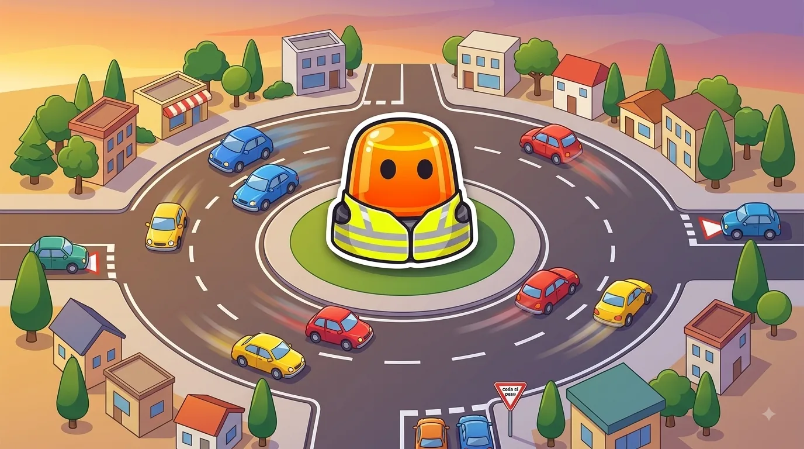
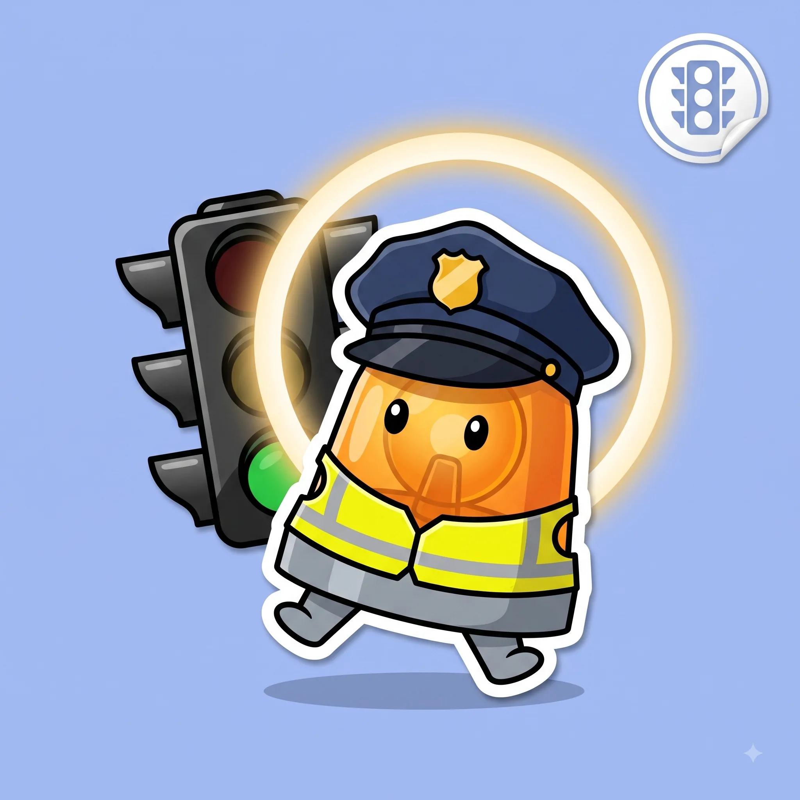

Intersecciones y prioridad de paso
Quién pasa primero en cruces y glorietas.
Esquema
La señal, si existe, manda por encima de la norma general de prioridad a la derecha.


Mismo significado que la señal vertical, pintado directamente en el asfalto.


Rotonda vs cruce sin señalizar: ¿quién pasa?
Rotonda / Glorieta
Prioridad para quien ya circula dentro
Cruce sin señalizar
Prioridad para quien viene por tu derecha
| Rotonda / Glorieta | Cruce sin señalizar | |
|---|---|---|
| ¿Quién tiene prioridad? | Los vehículos que ya están dentro | El que viene por tu derecha |
| ¿Quién cede? | Quien se incorpora desde fuera | Quien no tiene la derecha despejada |
| ¿Puede cambiar con señales? | Sí, algunas glorietas grandes tienen semáforos o STOP interiores | Sí, cualquier señal o semáforo manda por encima de esta norma |
Trucos para no olvidarlo
Agente, luego semáforo, luego señal, luego marca.
Ese es el orden de prioridad si dos indicaciones se contradicen: manda siempre la que esté más arriba en la lista.
En la rotonda, el de dentro manda.
Quien ya está circulando por la rotonda tiene prioridad sobre quien quiere entrar, salvo que una señal diga lo contrario.
La sirena gana a todo lo demás.
Un vehículo de emergencia con luces y sirena activadas tiene prioridad absoluta: el resto debe facilitarle el paso.
Confusiones típicas

Ponte a prueba
Otros temas
Señales verticales
La forma y el color ya te dicen el mensaje antes de leer nada.
Velocidad y distancias de seguridad
A más velocidad, la frenada crece mucho más rápido que la reacción.
Señales horizontales y marcas viales
Líneas, flechas y símbolos pintados en el asfalto, con su propio código.
Normas generales de circulación
Las reglas base que deciden por ti cuando no hay ninguna señal.
Adelantamientos
Cuándo, cómo y dónde se puede adelantar con seguridad.
Autopistas y autovías
Incorporaciones, carriles y normas específicas de vías rápidas.
Alcohol, drogas y fatiga
Tasas máximas y por qué te la juegas más de lo que crees.
El vehículo: mantenimiento y elementos de seguridad
Lo mínimo que debes revisar antes de coger el coche.
Accidentes: actuación y primeros auxilios
Proteger, avisar y socorrer, en ese orden.
Sanciones y puntos del carnet
Cómo funciona el sistema de puntos y qué te los quita.
Casos especiales: ciclistas, peatones, animales y meteorología
Las situaciones que no siguen la norma "de manual".